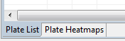

This editor will show you a list of plates of the experiment that you have opened. You can open an experiment by double-clicking on an experiment or by right-clicking on an experiment and selecting Browse Plates.
You can switch tab by choosing one in the bottom left corner:

The tab Plate Heatmaps (heatmap thumbnails) and 'Plate List' work together by sharing the selected plates. When selecting a plate or plates in the heatmap thumbnails, the same plates are selected in the plate list, and vice versa